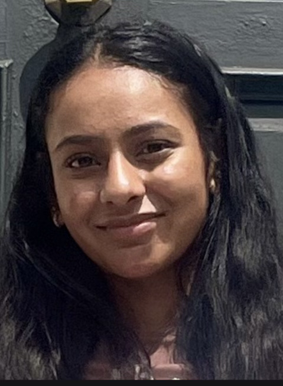

Priti Kote

Summary
As a self-motivated person and a fast learner with an analytical and
problem solving mindset, I am interested in learning about new technology
in order to add value to the company I am working for as well as further
my career goals. I have a strong background in leadership and experience
using various technology.
Education
-
Pursuing a Bachelor of Science, Computer Science - Rutgers University
(2022-2026)
- West Windsor Plainsboro High School South (2018-2022)
Work Experience
-
IT Analyst Intern at ADT Securities
May 2024 - August 2024
-
Assist analyst professionals by analyzing business goals,
objectives, and needs.
-
Worked on full stack developer skills editing and creating webpages.
-
Used Salesforce Commerce Cloud to enable e-commerce businesses and
sites.
-
Co-Founder/Developer of Voice Based Education App
2021-Present
-
Built a voice-based app focusing on Alexa in order to assist
students in their studying through Alexa Skill Kit (ASK)
- Published on Amazon Marketplace and had over 1000 customers
-
Developed the app on ASK and used MySQL on AWS as the database
-
Co-Founder/Developer of a Student Assisting App called RANI
2023-Present
-
Building an IOS app on XCode Swift that was founded by women for
women
-
Used to help girls who are going into college learn how to cope with
a new college lifestyle and navigate their experiences.
Skills
- People Skills: ☆☆☆☆☆
- Communication: ☆☆☆☆☆
- Leadership: ☆☆☆☆☆
- Problem Solving: ☆☆☆☆☆
- Java: ☆☆☆☆☆
- HTML: ☆☆☆☆☆
- JavaScript: ☆☆☆☆
- SQL: ☆☆☆☆
- Python: ☆☆☆
- XCode: ☆☆☆
- AWS: ☆☆☆
Other